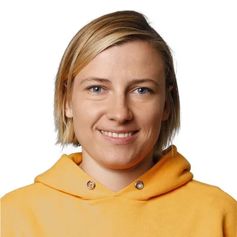

01 / LEADERSHIP
Teams that can grow.
How I grow teams, support managers and keep decisions close to the people doing the work.
I build software products and lead the teams that make them.

Across 15+ years in game development, I have worked on PC, web, iOS, Android and VR. At Decentraland, I worked on the original web client before leading the ground-up rebuild and production release of its Unity/C# PC client.
I have led technology departments of up to 50 people and built the systems needed to scale: engineering management, career frameworks, performance management, QA and predictable delivery.
Through GB Factory, I remain hands-on with mobile and VR products across client, backend and cloud architecture.
How I grow teams, support managers and keep decisions close to the people doing the work.
Games and applications I have built or led — multiplayer clients, launchers, AI assistants and internal engineering tools.
Distributed architecture, real-time systems, release and reliability work from products that had to keep running while we changed them.
Notes on prioritization, technical direction, AI adoption and engineering leadership.
I am open to conversations about engineering leadership roles, advisory work and product builds through GB Factory.
Get in touch